A large bronze "vault protector" coin of the Taiping Heavenly Kingdom; the characters read Taiping tianguo, "Heavenly Kingdom of Great Peace". Photo by Baomi, CC BY-SA 4.0, Wikimedia Commons.
Q4 story · Guangdong · 1837
In 1837 a Failed Candidate Fell Ill and Dreamed He Fought Demons Beside an Elder Brother
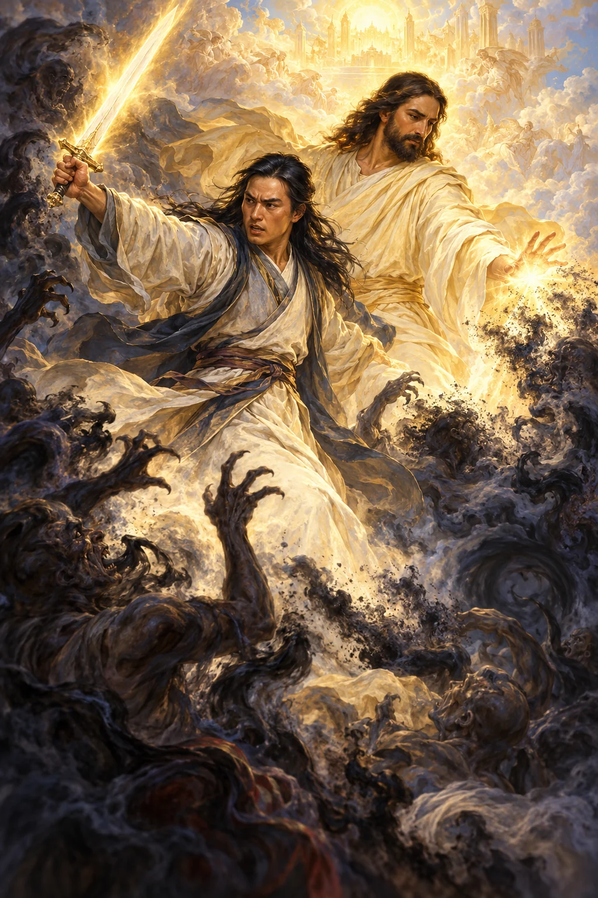
AI-generated illustration of Hong Xiuquan's vision of battling demons, supplied by the instructor. An interpretation, not a historical likeness or source.
Hong Xiuquan had spent years taking the civil service examinations, and kept failing.
In 1837, after another failure, he fell ill and saw visions.
A golden-bearded old man and a middle-aged man called him younger brother.
They told him to annihilate devils.
Sources: Ebrey, Ch. 18, p. 318; the year, the illness, and the sword (Hamberg, 1854; Spence, 1996). Image: AI-generated interpretation.
Recap · Sects, rootless men, and examinations
Recap: Sects, Rootless Men, and a Brutal Examination System Had Shaken the Qing Before
Landless young men with no hope of marriage drifted through the hills and cities · Ch. 16 L3 · rootless ↗
Sources: Ebrey, Ch. 18, p. 318; Ch. 16 L3–L4 and Ch. 14 L3 for the earlier stories.
Q4 story · Hua county, near Guangzhou · 1814–1843
Hong Xiuquan Was a Hakka Village Teacher Who Failed the Examinations Four Times
Hong was born in 1814 to a humble farming family near Guangzhou.
He was a Hakka, from a Han Chinese group with its own dialect, living mostly in the far south.
His family paid for his schooling, hoping he would pass the examinations and rise.
He failed in 1827, 1836, 1837, and a final time in 1843, and earned his living as a village teacher.
Names in This Story
Hong Xiuquanthe founder, 1814–1864; pronounced roughly "hoong shyou-chwan"
Hakka"guest people": a Han Chinese group with its own dialect, mostly in the far south
Taiping"Great Peace": the name of the kingdom he would found
Sources: Ebrey, Ch. 18, p. 318; the dates of the failures and his work as a teacher (Spence, 1996).
Q4 story · Guangzhou and Hua county · 1836–1843
Six Years After His Vision, a Christian Tract Convinced Hong He Was Jesus's Younger Brother
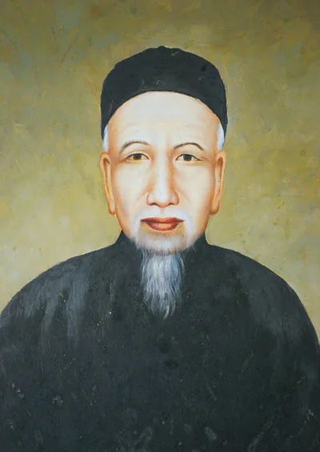
Liang Fa (1789–1855), the Chinese Protestant preacher who wrote the tracts Hong read. Portrait, date unknown. Public domain, Wikimedia Commons.
In Guangzhou, Hong had been handed a set of Christian tracts, and he set them aside.
After his last failure in 1843, he read them closely.
He decided the old man in his vision was God, and the middle-aged man was Jesus.
That made Hong, in his own eyes, Jesus's younger brother, sent to destroy demons.
Sources: Ebrey, Ch. 18, p. 318; the tracts' author, title, and dates (Spence, 1996).
Q4 story · Guangdong and Guangxi · 1843–1847
Hong Smashed Idols and Preached Against Opium, Alcohol, Foot Binding, and Prostitution
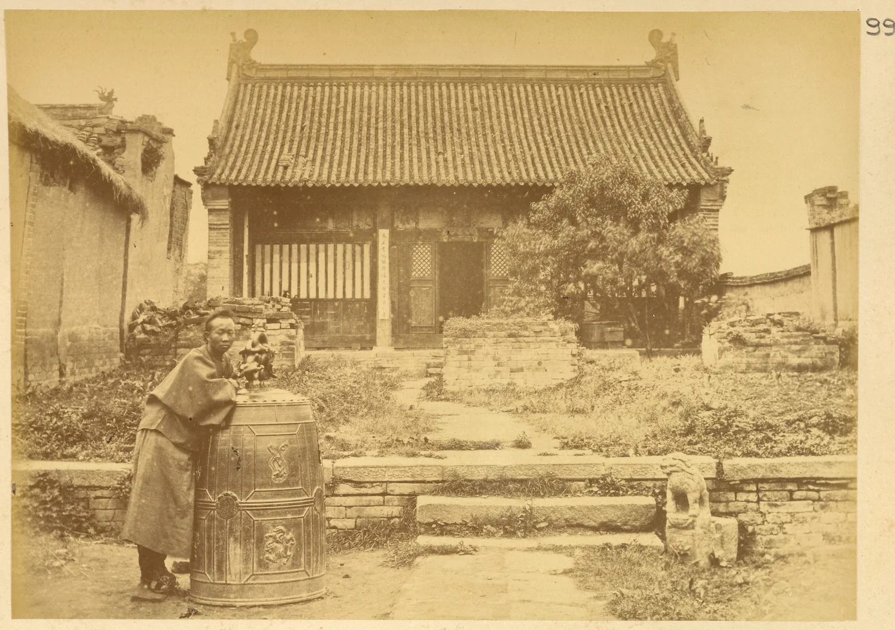
A man leans on a great bell left on the ground at a temple that the photograph's title says Taiping rebels destroyed. Adolf Boiarskii, 1875. Library of Congress via the World Digital Library, public domain, Wikimedia Commons.
Hong called on people to destroy idols and ancestral temples.
He preached against opium, alcohol, foot binding, and prostitution.
In 1847 he studied for two months with an American Baptist preacher and took up the Ten Commandments.
His cousin Feng Yunshan built the God Worshipping Society among the Hakka of Guangxi.
Sources: Ebrey, Ch. 18, p. 318; Roberts, Feng Yunshan, and the dates (Spence, 1996). Image: Library of Congress.
Q4 concept · Heterodox sect
Concept: To the Qing State, the God Worshippers Were a Heterodox Sect
Concept
Heterodox sect
A religious group whose teachings break with the beliefs the state approves. Qing law treated such sects as dangerous because they gathered people outside the control of officials and family elders.
The textbook calls the God Worshippers an "unorthodox religious sect."
Like the White Lotus, they promised that believers would be saved and their enemies destroyed · Ch. 16 L4 · eternal-mother ↗
Unlike the White Lotus, their god came from a Christian tract.
Officials and landlords saw a sect with its own leaders, its own rules, and soon its own weapons.
Sources: Ebrey, Ch. 18, p. 318; Ch. 16 L4 for the White Lotus.
Q4 story · Thistle Mountain, Guangxi · 1848
While Hong Was Away, a Charcoal Burner Began to Speak with the Voice of God the Father
Hong was a visionary, not an organizer, and other leaders learned to manipulate him.
In 1848 an illiterate charcoal maker named Yang Xiuqing went into trances among the God Worshippers.
Yang announced that when he spoke, it was the voice of God the Father.
That put Yang above Hong, who was only the younger son.
Names in This Story
Yang Xiuqingthe charcoal maker who spoke as God the Father; later the East King
Feng YunshanHong's cousin, who organized the God Worshippers in Guangxi
God Worshipping Societythe sect's name before the kingdom was declared
Sources: Ebrey, Ch. 18, p. 318; the trances and the arrest of Feng Yunshan (Spence, 1996).
Q4 story · Thistle Mountain, Guangxi · 1850
In 1850 Believers Left Their Homes, Pooled Their Money, and Gathered at Thistle Mountain
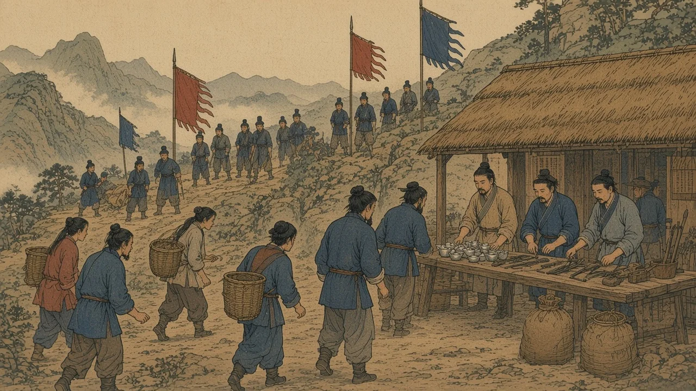
AI-generated illustration in a woodblock-print style, made for this deck: families bring their silver, tools, and grain to the sect's treasurers at Thistle Mountain in 1850, while men drill with spears nearby. An interpretation, not a historical source.
In 1850 the leaders told all God Worshippers to leave their homes.
Believers pooled their money into a common treasury.
They moved to Thistle Mountain in Guangxi, which soon became a huge military camp.
Many were Hakka villagers already fighting their neighbors over land and water.
Sources: Ebrey, Ch. 18, p. 318; the local feuds and the village of Jintian (Spence, 1996; Kuhn, 1970). Image: AI-generated interpretation.
Q4 story · Jintian, Guangxi · January 1851
In 1851 Hong Declared the Heavenly Kingdom of Great Peace, and His Men Cut Off the Queue
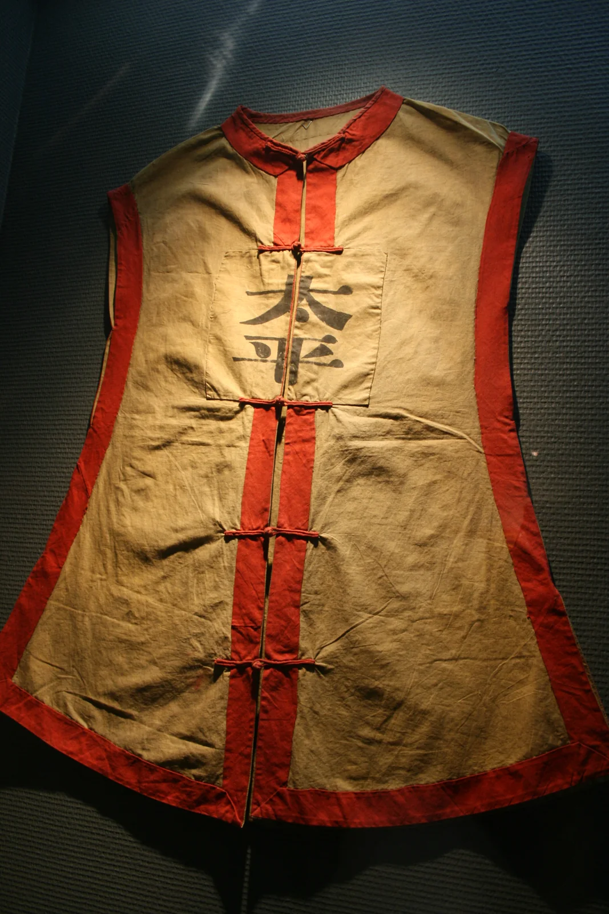
A Taiping soldier's tunic, Taiping Heavenly Kingdom History Museum, Nanjing. Photo by Gary Todd, CC0, Wikimedia Commons.
In January 1851 Hong declared himself king of the Heavenly Kingdom of Great Peace, an act of open rebellion.
The rebels called the Manchus foreigners who had "stolen" China.
When they took a city, they often killed the Manchu bannermen and their families.
In March 1853 they took Nanjing, and made it their Heavenly Capital.
Sources: Ebrey, Ch. 18, p. 318, and Map 18.2, p. 320; the month, the new name, and the Nanjing garrison (Spence, 1996; Elliott, 2001). Map: M.Bitton.
Q4 story · North China Plain · 1853–1855
A Taiping Army Marched North Toward Beijing, but Froze and Starved Near Tianjin
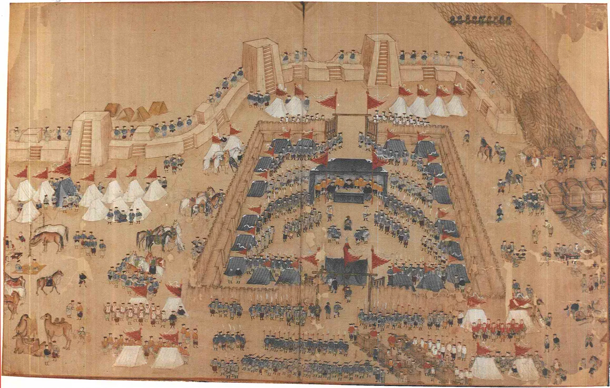
Qing forces besiege the last camp of the Taiping Northern Expedition and capture its general, Lin Fengxiang, in 1855. A Qing court painting of the 1850s celebrating the victory. Public domain, Wikimedia Commons.
In 1853 the rebels sent an army north to take Beijing.
Southern soldiers met a hard northern winter far from home.
Mongol and Manchu cavalry trapped them south of Tianjin.
By 1855 the army was destroyed and its generals captured.
Q4 story · Nanjing, the Heavenly Capital · 1853–1855
In Nanjing the Taiping Promised Shared Land and Separated Men from Women
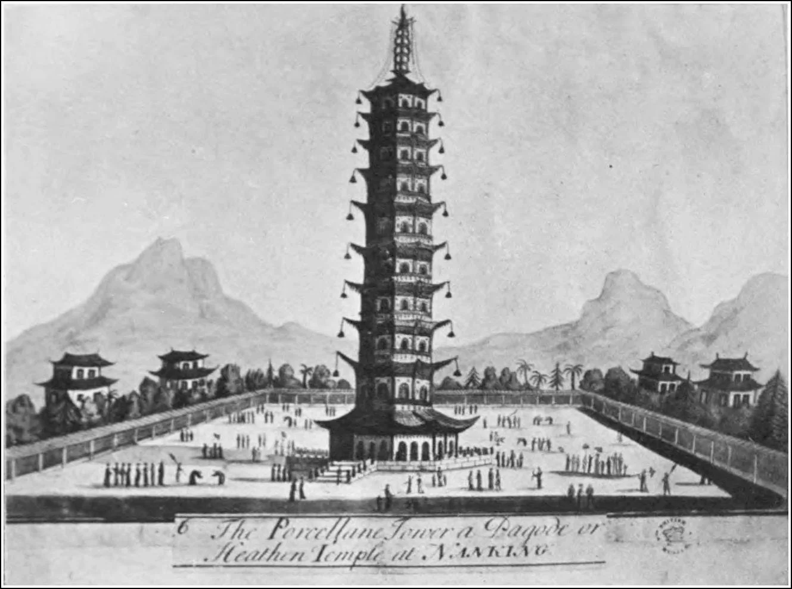
The Porcelain Tower of Nanjing, the city's famous landmark, which was destroyed in the fighting in 1856. Engraving reproduced in Arnold Wright, Twentieth Century Impressions of Hongkong, Shanghai, and Other Treaty Ports of China (1908). Public domain, Wikimedia Commons.
A Taiping land plan of 1853 promised to divide land equally by family size.
Its slogan: "Where there is land, all shall farm it together; … no one shall be hungry or cold."
Men and women lived in separate quarters; even married couples were kept apart.
Most of the plan stayed on paper, and the kingdom still had to collect taxes.
Sources: Ebrey, Ch. 18, p. 318; the Land System of the Heavenly Dynasty (1853), translated for this deck; separation of the sexes and its end in 1855 (Spence, 1996).
Q4 story · Taiping armies and Nanjing · 1850s
Taiping Women Unbound Their Feet, Worked in Separate Brigades, and Some Fought Qing Troops
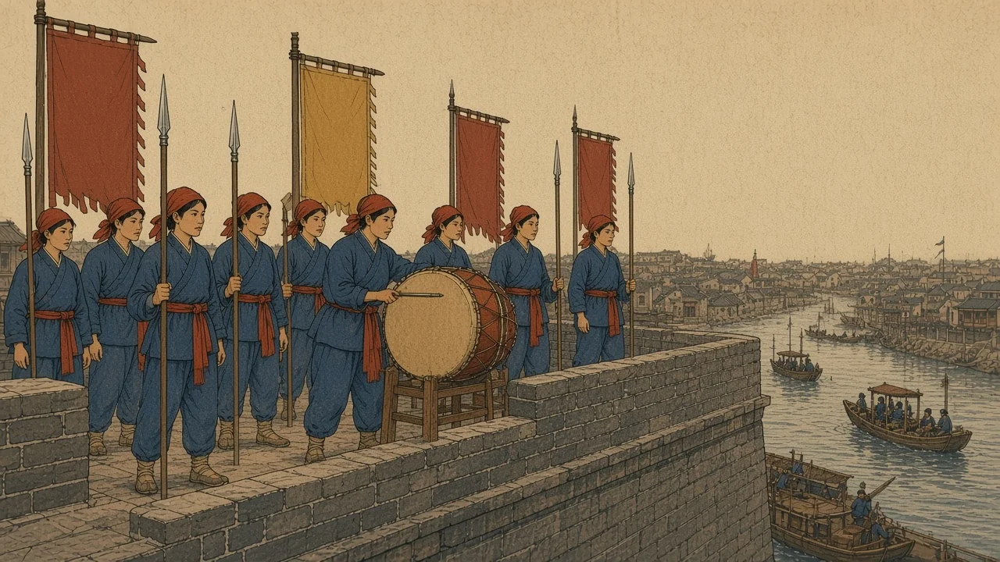
AI-generated illustration in a woodblock-print style, made for this deck: a brigade of Taiping women soldiers with spears and a drum on a city wall above the Yangzi. An interpretation, not a historical source.
Many Hakka women had never bound their feet, and the Taiping banned foot binding · Ch. 8 L4 · qing-policy ↗
Women were organized into their own work brigades, apart from the men.
Some brigades of women soldiers fought Qing forces.
Women served as officials and clerks inside the kingdom.
Sources: Ebrey, Ch. 18, p. 318; the brigades, women officials, and Hakka customs (Spence, 1996). Image: AI-generated interpretation.
Q4 story · Nanjing and Shanghai · 1853–1862
Western Missionaries Called the Taiping Faith Heresy, and Westerners Helped Defend Shanghai
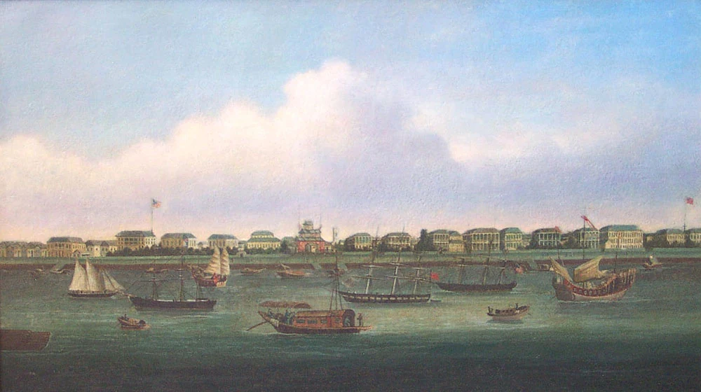
The Bund at Shanghai, the riverfront of the foreign trading houses, painted by an unknown Chinese artist about 1850. Public domain, Wikimedia Commons.
At first, some Westerners hoped the Taiping would make China Christian.
Missionaries who visited Nanjing concluded that the Taiping faith was heretical.
Even Hong's old teacher, Roberts, came to Nanjing in 1860 and left disillusioned.
When the rebels attacked Shanghai in 1860 and 1862, the Westerners there helped the Qing defend the city.
Sources: Ebrey, Ch. 18, pp. 318–319; Roberts in Nanjing and the British and French troops at Shanghai (Platt, 2012). Image: public domain.
Q5 story · Shanghai and Songjiang · 1860–1864
Shanghai's Merchants Paid for a New Army of Chinese Soldiers Drilled by Westerners
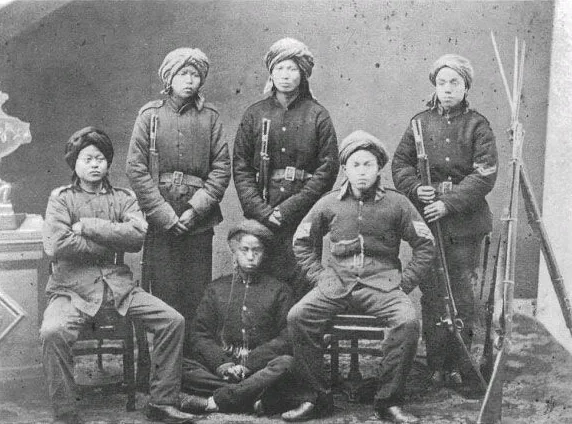
Chinese soldiers of the Ever Victorious Army, 1860s. Public domain, Wikimedia Commons.
In 1860 Shanghai officials and the banker Yang Fang hired foreigners to defend the city.
After its first foreign mercenaries failed, the army drilled Chinese recruits with Western rifles, cannon, and bugle calls.
In 1862 the Qing court named it the "Ever Victorious Army."
It fought beside Li Hongzhang's Huai Army in the campaigns around Shanghai.
Sources: Smith, Mercenaries and Mandarins (1978); Platt (2012). Image: public domain.
Q5 story · Shanghai to Cixi · 1860–1862
An American Adventurer, Frederick Townsend Ward, Founded the Army and Died Leading It
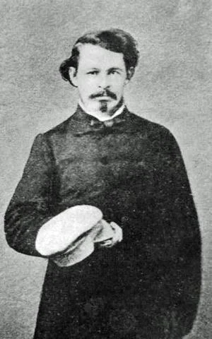
Frederick Townsend Ward (1831–1862), detail of a photograph taken in 1861. Public domain, Wikimedia Commons.
Ward, a sailor and soldier of fortune from Salem, Massachusetts, arrived in Shanghai in 1860.
Leading the first attack on Qingpu, he was shot through the face and nearly killed.
He became a Qing subject, married Yang Fang's daughter, and received Qing official rank.
In September 1862 he was shot leading an attack at Cixi, near Ningbo, and died the next day.
Sources: Smith (1978); Caleb Carr, The Devil Soldier (1992); Platt (2012). Image: public domain.
Q5 story · Jiangsu · 1863–1864
A British Officer, Charles Gordon, Took Suzhou in 1863 and Was Furious When Li Executed the Surrendered Kings
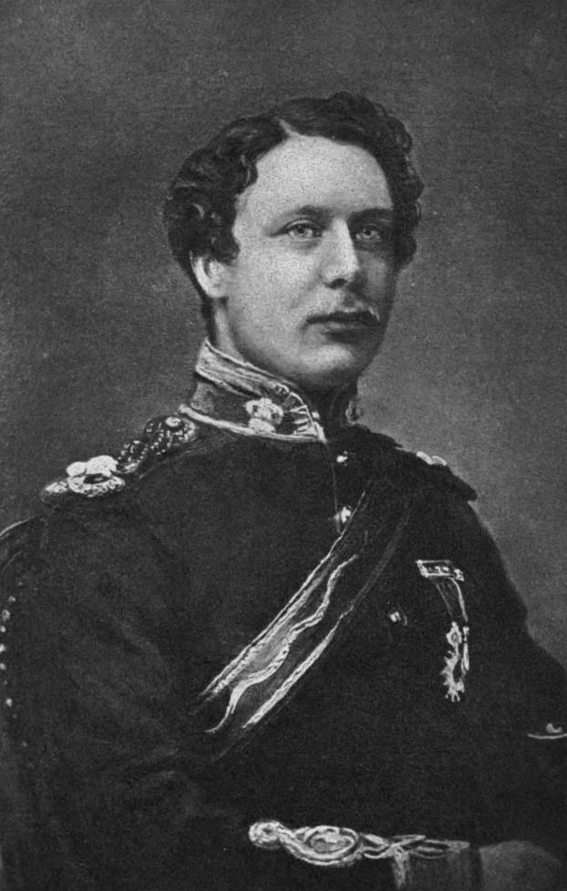
Charles George Gordon (1833–1885) as a young Royal Engineers officer, from a photograph taken about 1856, a few years before he went to China. Public domain, Wikimedia Commons.
In 1863 the British officer Charles Gordon took command of the Ever Victorious Army.
He used steamers and gunboats on the canals to take one walled town after another.
At Suzhou in December 1863, Taiping kings surrendered, and Li Hongzhang had them beheaded.
Gordon, who believed their lives had been promised, refused the emperor's reward and nearly quit.
Sources: Smith (1978); Platt (2012); Spence (1996). Image: public domain.
Q4 story · Nanjing · September 1856
In 1856 the Taiping Leaders Turned on Each Other, and Thousands Died in the Capital
Yang Xiuqing, still speaking as God the Father, demanded more power over Hong.
Hong had Yang killed; the general sent to do it also killed about twenty thousand of Yang's followers.
The general who killed Yang was killed in turn, and another leading general left with his army.
After 1856, the Taiping were weakened by quarrels among their leaders.
Sources: Ebrey, Ch. 18, p. 319; the title Yang demanded, Wei Changhui, and Shi Dakai (Spence, 1996).
Q4 story · The Yangzi valley · 1850–1864
The War Cost Some 20 to 30 Million Lives and Left the Lower Yangzi Ruined for a Generation
Both the Taiping campaigns and the Qing campaigns devastated the land.
Some 20 to 30 million people died; most from hunger and disease.
A Westerner in 1865 found a region "strewn with human skeletons."
The lower Yangzi, China's richest region, was ruined for a generation.
Sources: Ebrey, Ch. 18, pp. 318, 321; causes of death (Platt, 2012).
Reading Guide · Review Question 4
Reading Guide · Review Question 4
Review Question 4
How did the Taiping Rebellion begin, and why did it become one of the most destructive rebellions in world history?
Horrified by the Taiping, a Confucian Official Mourning His Mother in Hunan Raised a New Army
Zeng Guofan (1811–1872), photographed in 1871. Public domain, Wikimedia Commons.
The Chinese elite were horrified by the Taiping, with their foreign gods and women soldiers.
Local officials and landlords repaired walls, stored food, and drilled recruits.
The Qing realized it would have to rely on such locally raised armies.
It turned to Zeng Guofan, a Han Chinese official at home in Hunan mourning his mother.
Names in This Story
Zeng Guofanthe scholar-general who led the Hunan (Xiang) Army; pronounced roughly "dzuhng gaw-fahn"
Hunan ArmyZeng's force, also called the Xiang Army, after Hunan's Xiang River
Sources: Ebrey, Ch. 18, p. 320; Zeng's examination degree and the date of his appointment (Kuhn, 1970). Image: public domain.
Q5 concept · Private army
Concept: Zeng Built an "Essentially Private Army" Bound by Personal Loyalty
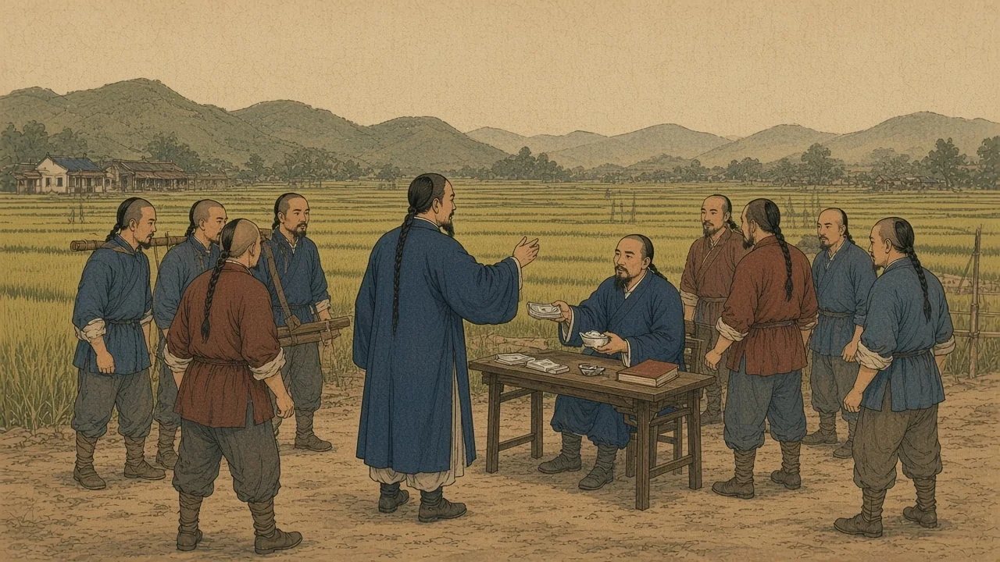
AI-generated illustration in a woodblock-print style, made for this deck: an officer of the Hunan Army enlists farmers from his home district, while a clerk counts out their pay. An interpretation, not a historical source.
Concept
Private army
An army whose soldiers are loyal first to the men who recruited and pay them, rather than to the state.
Zeng recruited officers from the Confucian-educated elite.
Each officer recruited his own soldiers from farmers in his home region.
Zeng could draw on local taxes, so he paid his men well, about three times a regular soldier's pay.
Soldiers were loyal to their officers, and the officers to Zeng.
Sources: Ebrey, Ch. 18, p. 320; the pay comparison (Kuhn, 1970). Image: AI-generated interpretation.
Q5 story · The middle Yangzi · 1854–1861
Zeng Built 240 War Junks and Took Back the Yangzi Valley Bit by Bit
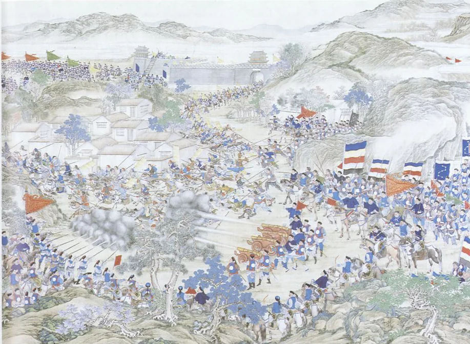
Qing forces at the Battle of Tongcheng, Anhui, part of the fighting around Anqing. Qing court painting by Qingkuan and others. Public domain, Wikimedia Commons.
Zeng built 240 war junks so he could attack along the rivers.
He gathered some modern Western weapons, such as artillery.
A new transit tax on trade, the lijin, helped pay for the provincial armies.
In 1861 his forces took Anqing, the key city upriver from Nanjing.
Sources: Ebrey, Ch. 18, p. 320; lijin and Anqing (Kuhn, 1970; Platt, 2012). Image: Qing court painting.
Q5 story · Shanghai and Zhejiang · 1862–1864
Zeng's Protégés Li Hongzhang and Zuo Zongtang Raised Armies of Their Own
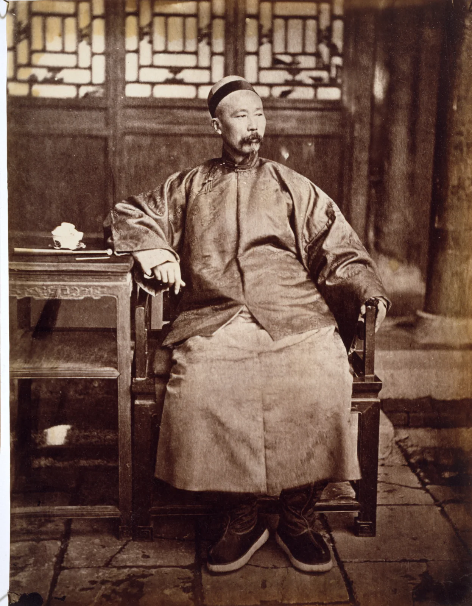
Li Hongzhang (1823–1901), photographed in 1871 by Lorenzo Fisler. Peabody Essex Museum, CC BY 3.0, Wikimedia Commons.
Generals under Zeng included close relatives and his protégés Li Hongzhang and Zuo Zongtang.
In 1862 Li raised the Huai Army in his home province of Anhui.
Shanghai merchants hired steamships to carry his troops past the rebels to Shanghai.
Li fought beside the Ever Victorious Army, and Zuo took back Zhejiang.
Sources: Ebrey, Ch. 18, p. 320; the Huai Army, the steamers, and Zuo in Zhejiang (Spector, 1964; Platt, 2012). Image: Peabody Essex Museum.
Q5 story · Nanjing · 1862–1864
In 1864 Hong Died, Nanjing Fell, and the Victors Slaughtered the City
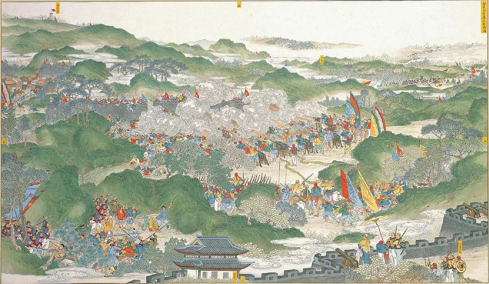
The Qing siege lines at Yuhuatai, outside Nanjing, as imagined by the Shanghai artist Wu Youru in 1886. Public domain, Wikimedia Commons.
From 1862, Zeng's brother besieged Nanjing; in June 1864 Hong died inside the starving city.
In July 1864 Nanjing fell, and the Hunan troops killed, burned, and looted for days.
Zeng reported over 100,000 "rebels" killed in three days. No one counted, and many of the dead were civilians.
Taiping armies held out longer elsewhere in the south.
Sources: Ebrey, Ch. 18, pp. 320–321; the siege, Hong's death, the dates, and the sack (Spence, 1996; Platt, 2012); Zeng Guofan's memorial of July 24, 1864. Image: Wu Youru, 1886.
Q5 concept · Regionalism
Concept: The Dynasty Survived, but Military Power Shifted to Regional Leaders
Concept
Regionalism
A shift of real power from the central court to regional leaders who raise their own armies and control their own revenue, while still serving the dynasty in name.
Unlike in earlier dynasties, the victorious generals did not fight each other for the throne.
Han Chinese officials, not Manchus, now held much of the dynasty's real military power.
Many of Zeng's officers became governors and governors-general in the decades after 1864.
Some historians see these armies as the seed of the warlords of the 1910s and 1920s (an interpretation) · Ch. 24 L2 · warlords ↗
Sources: Ebrey, Ch. 18, pp. 314, 320; the officers' later posts and the debate over regionalism (Michael, 1964; Spector, 1964; Kuhn, 1970).
Reading Guide · Review Question 5
Reading Guide · Review Question 5
Review Question 5
How did Zeng Guofan, Li Hongzhang, and other regional leaders help suppress the Taiping Rebellion, and what long-term effects did their methods have on China?
While the Qing Fought the Taiping, the British and French Came Back
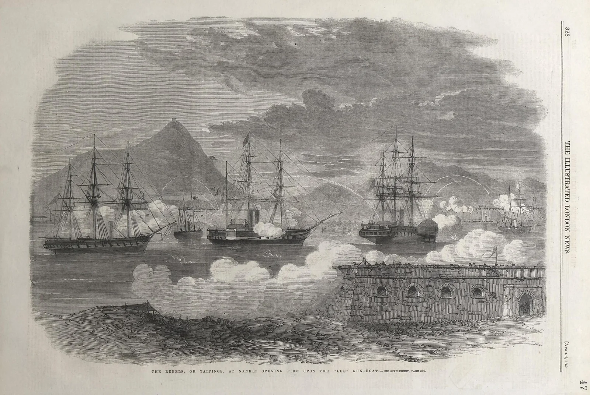
"The rebels, or Taipings, at Nankin opening fire upon the 'Lee' gun-boat," a British newspaper engraving published in 1859. Public domain, Wikimedia Commons.
The Taiping war and the Second Opium War were fought in the same years.
In 1857 British and French forces attacked again, this time in the south and then the north · Ch. 18 L1 · to-nanjing ↗
By 1860 they marched on Beijing itself.
Next lecture: the Second Opium War, and how men like Zeng and Li tried to make China strong · Ch. 18 L3 · title ↗
Sources: Ebrey, Ch. 18, pp. 321–322; Ch. 18 L1 for the first war. Image: British newspaper engraving, 1859.
Pierian Spring · Independent Study
Today's lecture ends here. Continue on your own: the stories below finish this chapter's history, and each ends with a review question to answer.
"A little learning is a dang'rous thing; Drink deep, or taste not the Pierian spring."Alexander Pope, An Essay on Criticism, 1711
Pierian Spring · Q6 story · Along the Grand Canal, north China · 1850s
In the North, Mounted Nian Gangs Seized Crops, Robbed Merchants, and Kidnapped the Rich
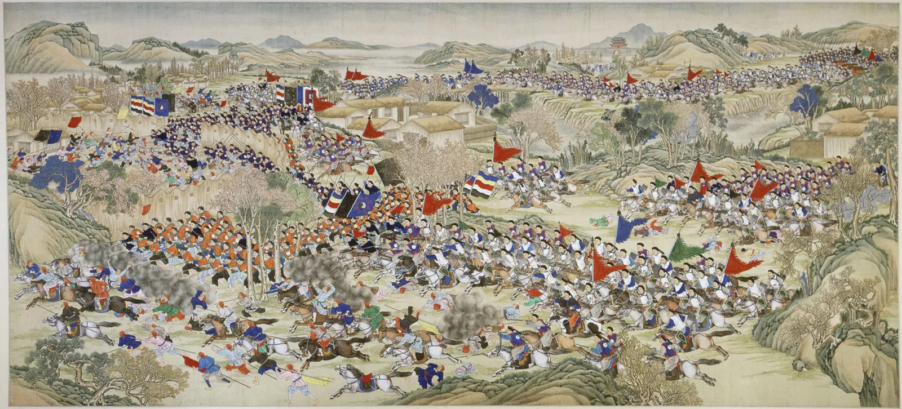
Qing troops fighting the Nian. Qing court painting by Qingkuan and others, about 1886–1890. Public domain, Wikimedia Commons.
These bands, called Nian gangs, rode horseback and lived by raiding.
They seized crops, robbed merchants, and kidnapped the wealthy for ransom.
Many Nian lived in walled villages north of the Huai River, which made them hard to root out.
Sources: Ebrey, Ch. 18, p. 321; Ch. 18 L1 and Ch. 14 L1 for the Grand Canal; the Huai River region and walled villages (Perry, 1980).
Pierian Spring · Q6 story · The Yellow River · 1851–1855
In 1855 the Yellow River Broke Its Dikes and Shifted to the North of the Shandong Peninsula
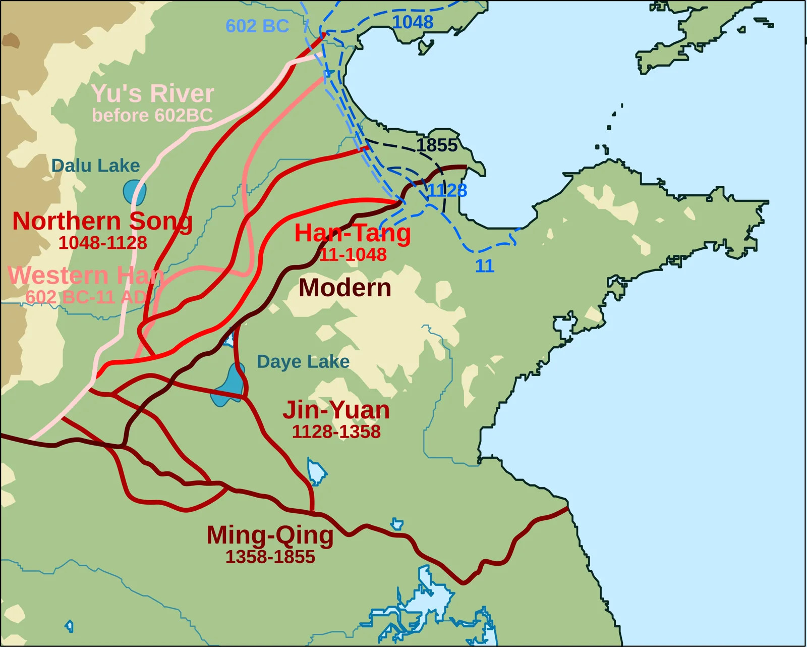
Historical courses of the Yellow River; the Ming–Qing course ran south of the Shandong peninsula until 1855. Map by Stevenliuyi and Esiymbro, CC BY-SA 4.0, Wikimedia Commons.
Severe floods in 1851 weakened the dikes of the Yellow River.
In 1855 the dikes gave way, and the river moved from south of the Shandong peninsula to north of it.
The new course cut across the Grand Canal, and the state was too busy with war to tame the river.
Those made homeless by the floods joined the Nian bands simply to survive.
Sources: Ebrey, Ch. 18, p. 321; the breach site and the canal (Pomeranz, 1993). Map: Stevenliuyi and Esiymbro.
Pierian Spring · Q6 story · North China · 1853–1868
Part-Time Raiders and Ex-Taiping Soldiers Kept the Nian Going Until Zeng and Li Ended It in 1868
Many Nian joined only part of the year, raiding in spring and autumn and farming the rest.
After 1864, some Taiping soldiers joined the Nian.
In 1865 the Nian killed the Qing's top cavalry commander, the Mongol prince Sengge Rinchen.
Zeng Guofan and then Li Hongzhang took over, and by 1868 Li's armies had crushed the Nian.
Sources: Ebrey, Ch. 18, p. 321; Sengge Rinchen, the blockade lines, and the end in 1868 (Perry, 1980).
Pierian Spring · Q6 story · Yunnan, the southwest · 1850s
In Yunnan, Fights over Mines Between Han Settlers and Muslims Grew into a Massacre and a Revolt
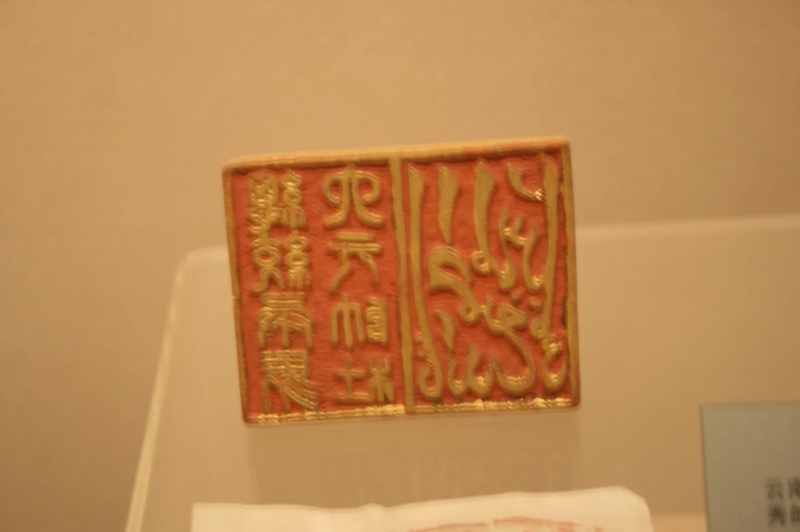
A jade seal identified as that of Du Wenxiu, leader of the Muslim uprising in Yunnan, displayed at the Taiping Heavenly Kingdom History Museum, Nanjing. Photo by Gary Todd, CC0, Wikimedia Commons.
With Qing armies busy in the interior, revolts in the southwest and northwest got out of hand.
Han Chinese settlers moved into Yunnan and seized copper, gold, and silver mines.
Han militias killed Muslims, and Muslims in turn killed Chinese officials.
In 1856 officials in the provincial capital, Kunming, encouraged a massacre of thousands of Muslims.
Sources: Ebrey, Ch. 18, p. 321; the Kunming massacre (Atwill, 2005). Image: Gary Todd.
Pierian Spring · Q6 story · Dali, Yunnan · 1856–1873
Rebels Made Dali the Capital of a Muslim-Led State, and the Qing Won Only by Dividing Them
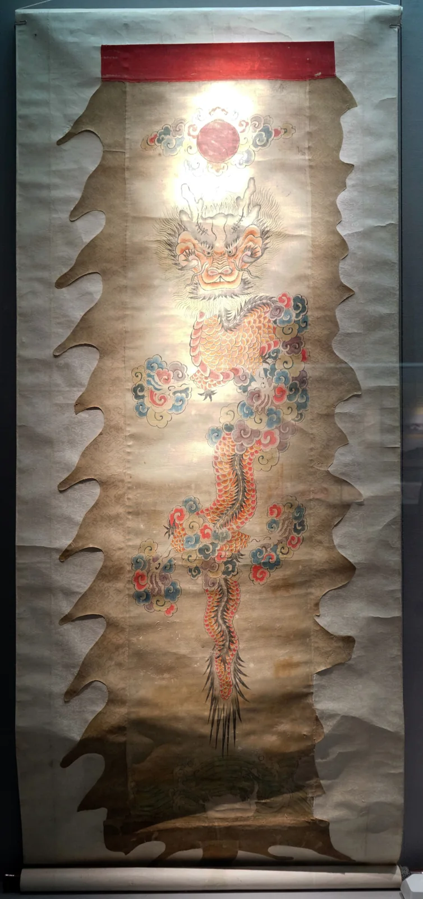
A white dragon banner identified as a flag of Du Wenxiu's state, late Qing. Photo by Cangminzho, CC BY-SA 4.0, Wikimedia Commons.
Rebels captured the city of Dali and set up a state, known to outsiders as the sultanate of Panthay.
Its leader, Du Wenxiu, ruled for sixteen years and included Han and other peoples in his government.
Yunnan's remote mountains made it hard for the Qing to send troops.
The Qing won back control in 1873 by playing Muslim factions against each other.
Sources: Ebrey, Ch. 18, p. 321; Du Wenxiu, Ma Rulong, and the fall of Dali (Atwill, 2005). Image: Cangminzho.
Pierian Spring · Q6 story · Shaanxi and Gansu, the northwest · 1862–1871
In the Northwest, Old Han–Muslim Hatreds and a New Sufi Order Fed a Long War
In 1862, fighting between Han militias and Muslims broke out in Shaanxi and spread to Gansu.
The textbook roots the revolt in Sufism, a mystical school of Islam.
But much of the violence came from long hatred between Han Chinese and Muslims.
A Sufi leader, Ma Hualong, held a fortress town in Gansu until 1871.
Sources: Ebrey, Ch. 18, p. 321; the start in Shaanxi and Ma Hualong (Lipman, 1997).
Pierian Spring · Q6 story · Gansu to Xinjiang · 1868–1878
Zuo Zongtang Starved Out the Northwest, Then Marched On to Win Back Xinjiang
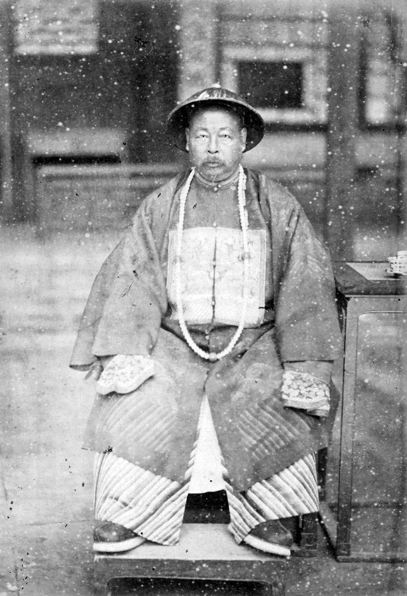
Zuo Zongtang (1812–1885), photographed in 1875 by Adolf Boiarskii. Public domain, Wikimedia Commons.
The Qing sent Zuo Zongtang, Zeng's protégé, to retake the northwest.
Zuo classed the "New Teaching" Sufis as heterodox, like the White Lotus or the Taiping.
His campaign took five years of sieges in which the people slowly starved.
Sources: Ebrey, Ch. 18, p. 321; Ch. 16 L2 for the conquest of Xinjiang; Jinjibao, Suzhou, and Yakub Beg (Lipman, 1997; Kim, 2004). Image: public domain.
Reading Guide · Review Question 6
Reading Guide · Review Question 6
Review Question 6
Besides the Taiping Rebellion, what other major internal rebellions threatened the Qing Dynasty during the nineteenth century, and what factors contributed to their outbreak?
Pierian Spring · A last story · The Vietnam border · 1865–1885
Rebels from Guangxi Crossed into Vietnam, Became the Black Flags, and Fought the French
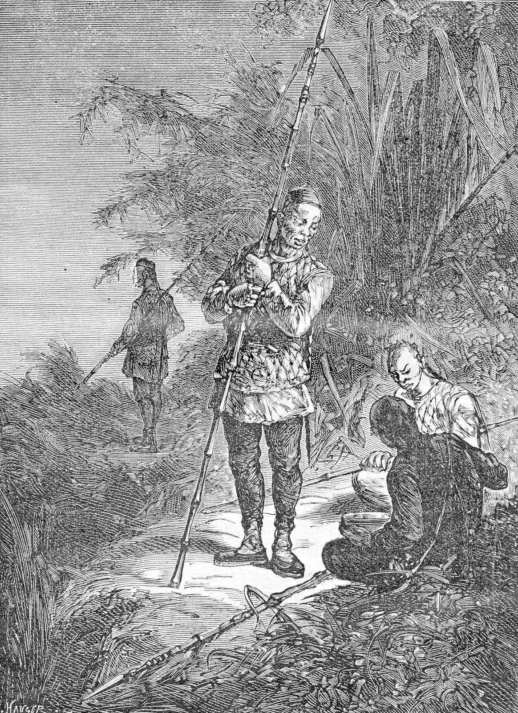
"Black Flag soldiers," a French engraving from Charles Huard, La guerre du Tonkin (1887). A French view of France's enemies. Public domain, Wikimedia Commons.
Rebel bands from Guangxi, separate from the Taiping, fought on near the Vietnam border.
One band, led by Liu Yongfu, crossed into northern Vietnam in 1865.
Known as the Black Flags, they fought French colonial expansion.
In 1873 they killed the French officer Francis Garnier near Hanoi.
Sources: Ebrey, Ch. 18, p. 321; Liu Yongfu, Garnier, and Taiwan (Davis, 2017). Image: Huard, 1887.
Sources and image credits
The Stories in This Deck Rest on These Sources
Main source
Patricia Buckley Ebrey, A History of China, Chapter 18, "China in Decline (1800–1900)," pp. 314, 318–322. All page references in this deck are to these pages.
A Western observer, 1865, cited in R. Keith Schoppa, Revolution and Its Past (2002), p. 64, as quoted in Ebrey, p. 321 (slide t).
Primary texts mentioned briefly
Theodore Hamberg, The Visions of Hung-Siu-Tshuen (Hong Kong, 1854) (slide b).
The Land System of the Heavenly Dynasty (Tianchao tianmu zhidu), 1853; line translated here; full text in Franz Michael, The Taiping Rebellion, vol. 2 (1971) (slide m).
Further reading beyond Ebrey
Jonathan D. Spence, God's Chinese Son (1996) (slides b–o, r–t, z).
Stephen R. Platt, Autumn in the Heavenly Kingdom (2012) (slides o–r, t, x–z); Zeng Guofan's memorial of July 24, 1864 (slide z).
Philip A. Kuhn, Rebellion and Its Enemies in Late Imperial China (1970), and "The Taiping Rebellion," in The Cambridge History of China, vol. 10 (1978) (slides i, l, v–x, aa).
Mark C. Elliott, The Manchu Way (2001), on the Nanjing garrison (slide k).
Jian Youwen (Jen Yu-wen), The Taiping Revolutionary Movement (1973), and Luo Ergang's studies, on the disputed women's examination (slide n).
Stanley Spector, Li Hung-chang and the Huai Army (1964), with an introduction by Franz Michael (slides y, aa).
Elizabeth J. Perry, Rebels and Revolutionaries in North China (1980) (slides ee, gg).
Richard J. Smith, Mercenaries and Mandarins (1978); Caleb Carr, The Devil Soldier (1992) (slides p–r).
Kenneth Pomeranz, The Making of a Hinterland (1993) (slide ff).
David G. Atwill, The Chinese Sultanate (2005) (slides hh–ii).
Jonathan N. Lipman, Familiar Strangers (1997) (slides jj–kk).
a: Taiping "vault protector" coin. Photo by Baomi, CC BY-SA 4.0.
b: AI-generated illustration of Hong Xiuquan's vision, supplied by the instructor. An interpretation, not a historical likeness or source.
i, n, w: AI-generated illustrations in a woodblock-print style, made for this deck. Interpretations, not historical sources.
e: Portrait of Liang Fa, date unknown. Public domain.
f, kk: Adolf Boiarskii, photographs of 1875: a bell from a temple destroyed by the Taiping (Library of Congress), and Zuo Zongtang. Public domain.
j, hh: Taiping soldier's tunic and the jade seal attributed to Du Wenxiu, Taiping Heavenly Kingdom History Museum, Nanjing. Photos by Gary Todd, CC0.
k: Map of the Taiping Heavenly Kingdom by M.Bitton. CC BY-SA 4.0.
l, x, ee: Qing court paintings: the capture of Lin Fengxiang (1850s); Qingkuan and others, the Battle of Tongcheng and a battle against the Nian (about 1886–1890). Public domain.
m: The Porcelain Tower of Nanjing, engraving in Arnold Wright, Twentieth Century Impressions of Hongkong (1908). Public domain.
o, p: The Bund at Shanghai, Chinese export painting, about 1850; soldiers of the Ever Victorious Army, 1860s. Public domain.
q, r: Frederick Townsend Ward, photograph, 1861; Charles George Gordon, photograph, about 1856. Public domain.
v, y: Zeng Guofan, photograph, 1871 (public domain); Lorenzo Fisler, Li Hongzhang, 1871, Peabody Essex Museum (CC BY 3.0).
z: Wu Youru, the siege at Yuhuatai, 1886. Public domain.
cc: "The rebels, or Taipings, at Nankin opening fire upon the 'Lee' gun-boat," British newspaper engraving, 1859. Public domain.
ff: Map of the historical courses of the Yellow River by Stevenliuyi and Esiymbro. CC BY-SA 4.0.
ii: White dragon banner attributed to Du Wenxiu's state. Photo by Cangminzho, CC BY-SA 4.0.
mm: "Black Flag soldiers," from Charles Huard, La guerre du Tonkin (1887). Public domain.